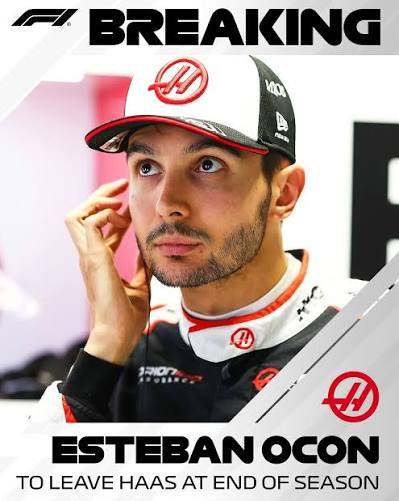
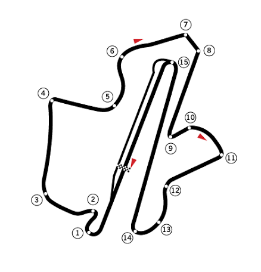

Kontrakty kierowców przed Grand Prix Malezji
Weekend wyścigowy w Malezji przynosi nie tylko sportowe emocje. W padoku dużo mówi się również o przyszłości kierowców i składach zespołów na sezon 2027.
Wiele gwiazd ma już spokojną sytuację. Lando Norris pozostanie w McLarenie co najmniej do końca 2030 roku, a Oscar Piastri ma wieloletnią umowę obejmującą przynajmniej sezon 2027. W Mercedesie pozostają George Russell i Kimi Antonelli, natomiast Charles Leclerc ma wieloletni kontrakt z Ferrari.

Dużo większe emocje dotyczą jednak kierowców, których przyszłość nie jest jeszcze w pełni ustalona. Jednym z najważniejszych nazwisk jest Esteban Ocon. Francuz potwierdził 30 września, tuż przed weekendem w Malezji, że po zakończeniu sezonu 2026 odejdzie z Haasa. Ocon dołączył do zespołu w 2025 roku i obecnie nie wiadomo jeszcze, gdzie będzie ścigał się w kolejnym sezonie. Sam kierowca podkreślił jednak, że jego odejście z Haasa nie oznacza końca kariery w Formule 1.
Haas nie ogłosił jeszcze następcy Ocona. Wśród kierowców łączonych z tym miejscem wymienia się m.in. juniora Ferrari Rafaela Camarę, a także kilku innych zawodników.
Sytuacja kontraktowa może więc jeszcze doprowadzić do zmian na przyszłorocznej gridzie. Dla Ocona każdy z pozostałych wyścigów sezonu jest okazją, aby pokazać swoją wartość i znaleźć miejsce na 2027 rok.
Dlaczego GP Bahrainu odbędzie się na torzę w malezji?
Tegoroczne Grand Prix Bahrajnu jest wyjątkowe. Choć nosi nazwę Grand Prix Bahrajnu, wyścig odbędzie się nie na Bahrain International Circuit, lecz na Sepang International Circuit w Malezji, w dniach 2–4 października 2026 roku.
Powodem są napięcia i sytuacja bezpieczeństwa na Bliskim Wschodzie. Pierwotnie Grand Prix Bahrajnu miało odbyć się w kwietniu, jednak wyścig został odwołany. Aby zachować tę rundę w kalendarzu Formuły 1, zdecydowano się przenieść ją do innego kraju.

Dlaczego wybrano właśnie Malezję? Sepang to jeden z najbardziej znanych torów w historii F1. Obiekt położony niedaleko Kuala Lumpur gościł Formułę 1 w latach 1999–2017. Tor jest dobrze przygotowany do organizacji wyścigów najwyższej rangi, a jego charakterystyczna konfiguracja oferuje długie proste, szybkie zakręty i wymagającą pogodę.
Dzięki porozumieniu pomiędzy Formułą 1, FIA oraz władzami Bahrajnu i Malezji udało się zachować wyścig w kalendarzu. Co ciekawe, oficjalna nazwa pozostaje Formula 1 Gulf Air Bahrain Grand Prix in Malaysia. Oznacza to, że jest to Grand Prix Bahrajnu rozgrywane na malezyjskim torze.
Powrót F1 do Sepang jest również dużym wydarzeniem dla kibiców. Malezja nie gościła królowej motorsportu od 2017 roku. Po dziewięciu latach kierowcy ponownie zmierzą się na jednym z najbardziej charakterystycznych torów Azji.
Kary po GP Azerbejdżanu. Kto będzie musiał uważać podczas GP Bahrajnu?
Kary po GP Azerbejdżanu. Kto będzie musiał uważać podczas GP Bahrajnu?
Po Grand Prix Azerbejdżanu uwaga kibiców Formuły 1 skupia się nie tylko na wynikach, ale również na karach i ewentualnych konsekwencjach dla kierowców przed kolejnym wyścigiem. Szczególnie istotne są punkty karne na superlicencji FIA, które mogą doprowadzić do zawieszenia zawodnika po zgromadzeniu 12 punktów w ciągu 12 miesięcy.
Największą karę otrzymał Franco Colapinto z Alpine, który po kolizji z Pierre'em Gaslym i Lando Norrisem podczas restartu po samochodzie bezpieczeństwa został ukarany przesunięciem o pięć pozycji na starcie kolejnego wyścigu. Ponieważ nie ukończył GP Azerbejdżanu, kara czasowa 10 sekund została zamieniona na karę przesunięcia na starcie. Formula 1® - The Official F1® Website
Kolejnym ukaranym kierowcą został Gabriel Bortoleto z Audi. Brazylijczyk otrzymał 10 sekund kary za wyprzedzanie przy żółtej fladze, co spowodowało spadek z 13. na 15. miejsce w klasyfikacji wyścigu. Nie oznacza to jednak dodatkowej kary na starcie GP Bahrajnu. Formula 1® - The Official F1® Website
również zwrócić uwagę na Carlosa Sainza, który po naruszeniu przepisów dotyczących żółtych flag podczas kwalifikacji w Baku powiększył swój dorobek punktów karnych na superlicencji do czterech. Jest to istotna informacja przed kolejnymi rundami sezonu. gpfans.com
Grand Prix Bahrajnu rozgrywane na torze Sepang w Malezji zapowiada się więc interesująco. Szczególnie ciekawie będzie obserwować Colapinto, który będzie musiał odrobić straty wynikające z kary, oraz kierowców, którzy po ostatnich wydarzeniach będą musieli zachować większą ostrożność.